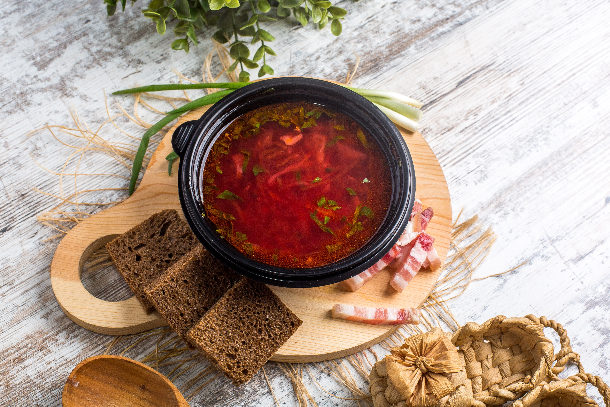

Ukrainian Borsch
Ingridients:
pork
tomato paste
carrot and beet
potatoes
cabbage

Vegetable soup
Ingridients:
chicken broth
sweet potato
broccoli
green beans or peas
salt and pepper

Itallian minestrone
Ingridients:
extra-virgin olive oil
onion
tomato paste
carrots
garlic, oregano, and thyme

Butternut soup
Ingridients:
large butternut squash
garlic and onion
potato
carrot
olive oil